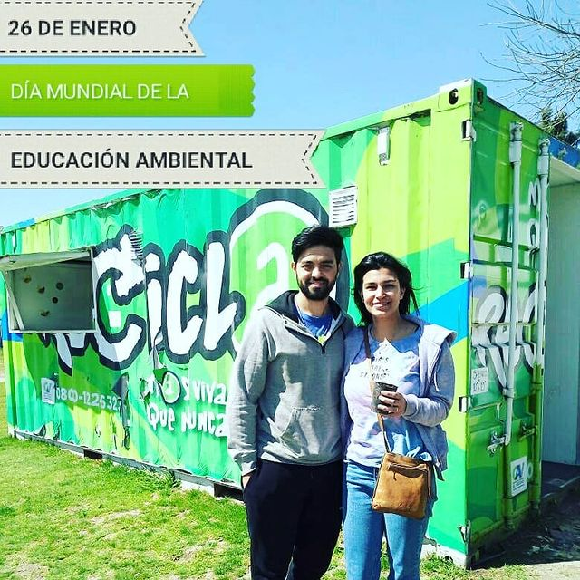
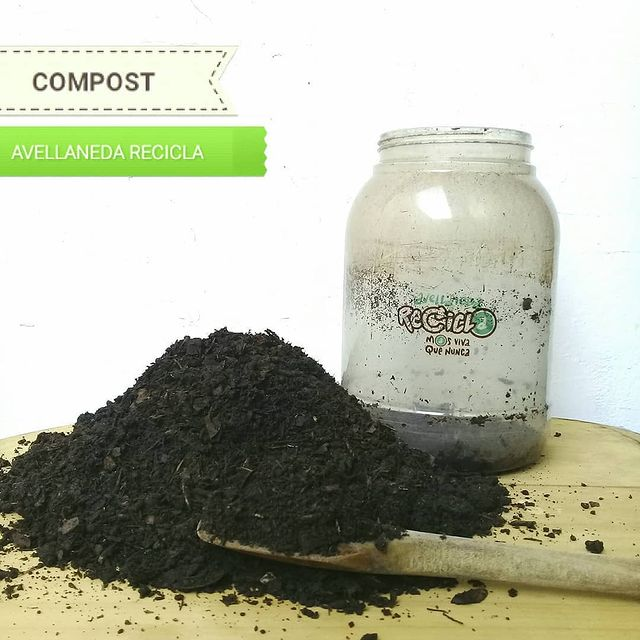
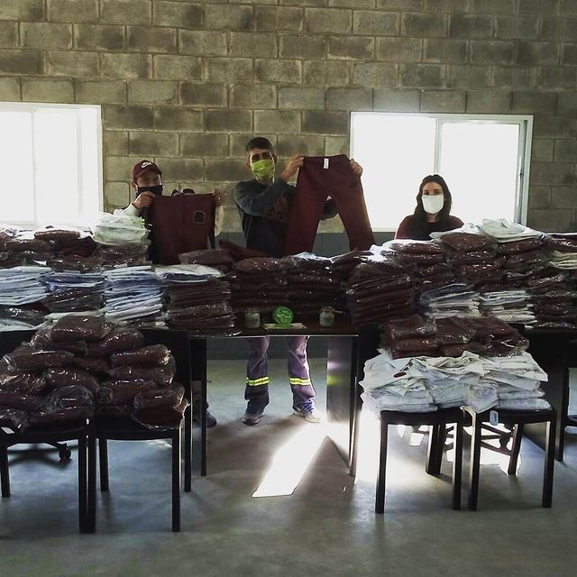
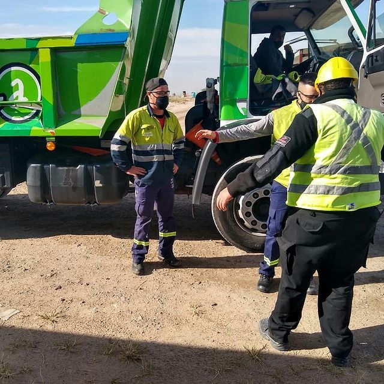
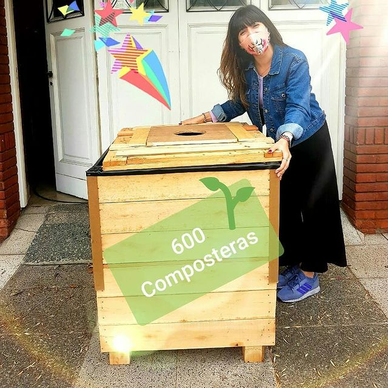
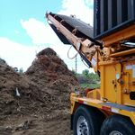
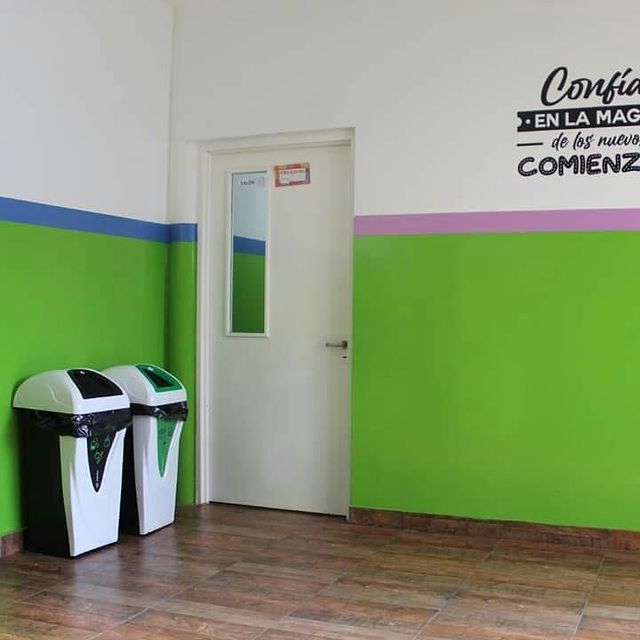
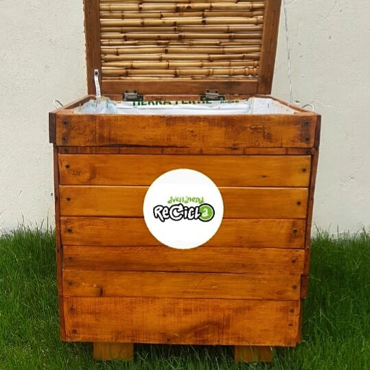

¿Cuáles son los beneficios de separar los residuos?
Cada habitante de Avellaneda genera 1 kg de residuos al día aproximadamente.
Así sumamos en total 350 toneladas diarias. Si no separamos los reciclables de los residuos, son enviados al relleno sanitario, realizando un recorrido lineal.
Si los separamos, los reciclables llegan a nuestra planta de clasificación EcoPunto, realizando un recorrido

¿Cuáles son los beneficios de realizar Compostaje?
Gran parte de la basura que generamos en nuestra casa es materia orgánica, que puede ser aprovechada, previo tratamiento, como enmienda orgánica en huertas y jardines.
Realizar compostaje doméstico tiene muchos beneficios para todos:
1)Reduce la cantidad de materia orgánica que va a los vertederos.
2)Reduce el uso de fertilizantes inorgánicos, a los que sustituye.
3)Ahorra agua de riego debido a la capacidad de retención del agua del compost.
4)Aporta los nutrientes necesarios para el desarrollo de las plantas de forma natural.
5)Reduce los costes de transporte de los residuos con los consiguientes beneficios para los ciudadanos..






